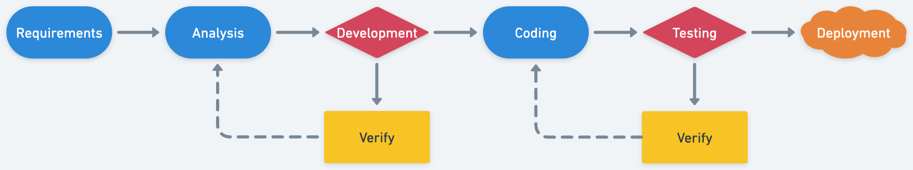
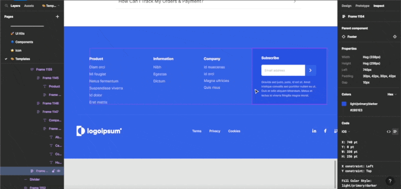
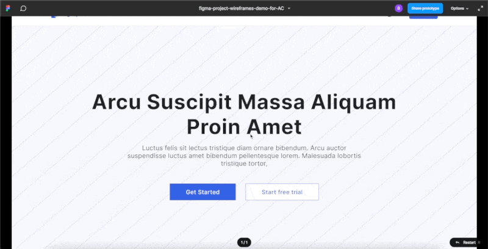
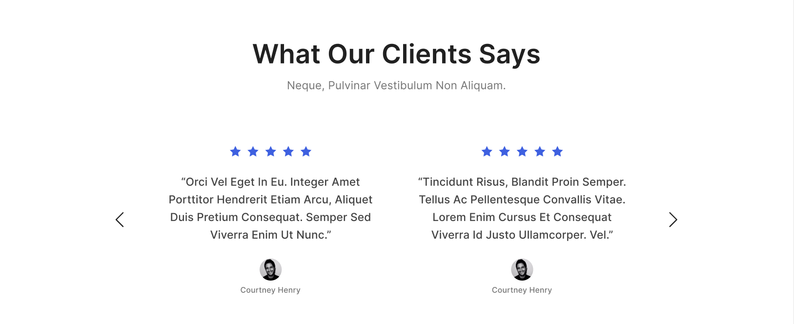
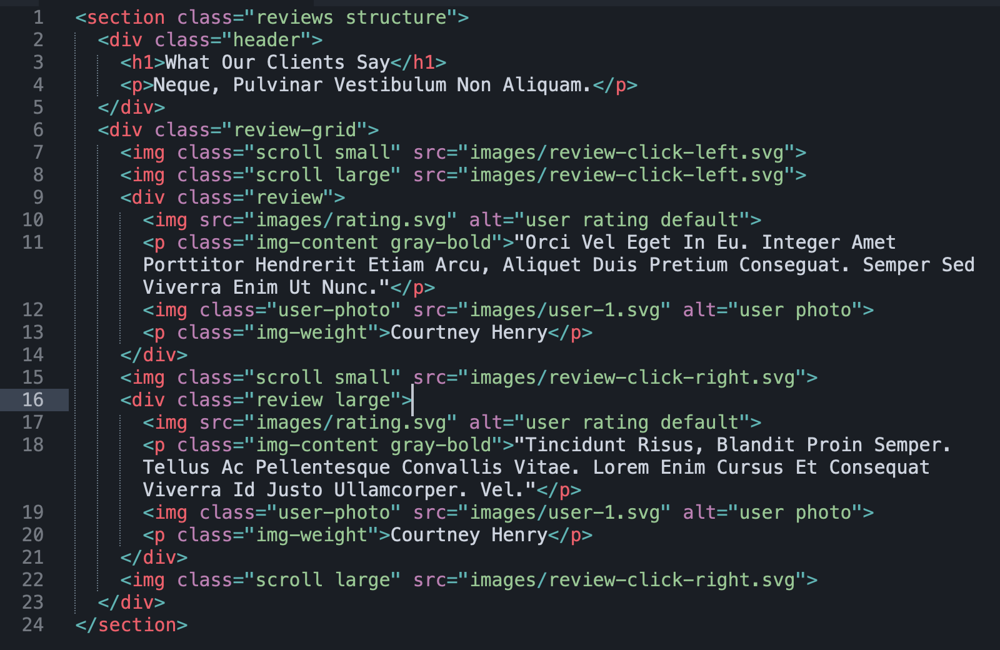
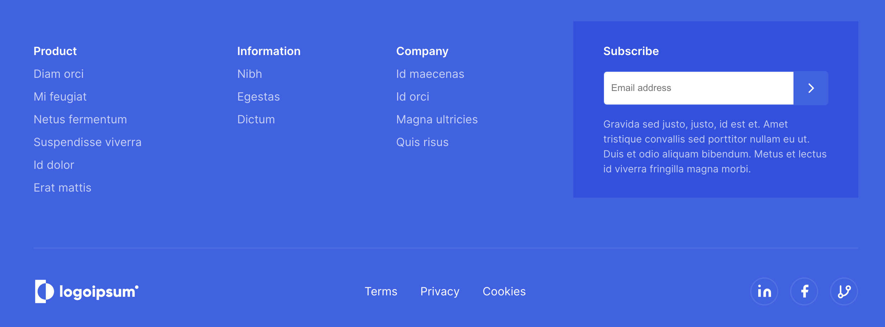
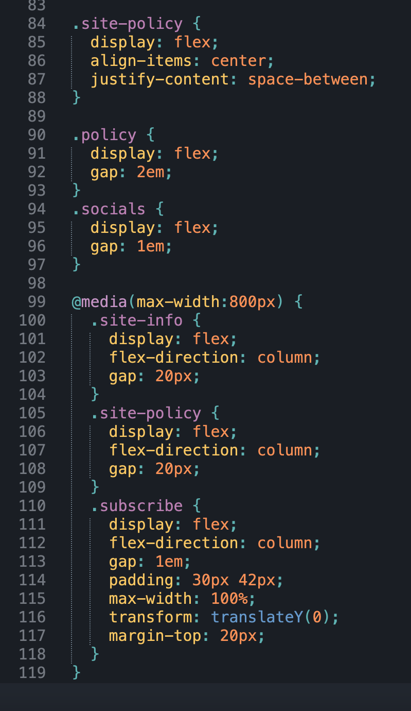

Case Study
Methodology
There are five main sects of process for my methodology when using code to create a project. First, is to determine the requirements of the project. Second, is to analyze the bounds of the project, assigned to me by the original design wireframe, or inspiration for the final outcome. Third, is to begin development of the design present, or continue to iterate on the design before preceding to; Fourth, making sketches with code. Formatting the project using sections, or dividers to be filled in with data later. Fifth, testing. Ensuring the code, filled in with all data is properly functioning, if it is not then go back to step four and continue until the process is complete.
Requirements
Examining the prompts design elements and measurements.
Analysis
Analyze the elements of the project. What is needed? SVGs, Flexbox, Grid. What else?
Development
 This sectioned image is from the Figma wireframe and following is code written based on the given design.
Coding
 Above is a screenshot of the footer I coded out. And below is some of the code functionality.
Testing
Quick video of myself working through a short test.
What it means to work with tech and code.
To me, working with tech and code is a way to direct my creativity into design. It's a tool that allows me to bring my ideas to life in a tangible way. There are many sides to tech, and coding offers a way to tap into its potential for creativity. For me, the goal of working with code is to create designs that are visually pleasing, communicate a message, and achieve the intended goals of the project. It requires a combination of technical knowledge, artistic vision, and problem-solving skills. Overall, working with tech and code is an exciting opportunity to innovate and solve problems.